PM·서비스 기획 9년+
교육·핀테크·미디어 서비스를 기획하고 운영했어요. 지금은 서비스 기획 컨설팅·에이전시 셀렉트웨이를 운영해요.
오후에는 강사와 인사하고, AI PM이 어떤 사람인지, 취업과 창업에서 이 과정을 어떻게 쓰면 되는지 함께 정리해요. 서로를 알아 가는 아이스브레이킹을 한 뒤, 앞으로 매일 쓸 ChatGPT와 Claude에 로그인해 기본 화면부터 익혀요.
| 시간 | 11:00–12:00 운영 매니저 안내 · 12:00–13:00 점심 · 13:00–18:00 강사 수업 |
|---|---|
| 진행 방식 | 실시간 비대면 수업이에요. 카메라를 켜고, 말하기 어려운 내용은 채팅으로 남겨도 괜찮아요. |
| 교육 목표 | 훈련 과정 전반을 이해하고, 수강생끼리 라포(rapport, 서로 믿고 편하게 대화할 수 있는 관계)를 쌓아 팀 프로젝트의 기반을 만든다. |
| 주요 내용 | ① 강사 소개 ② AI PM은 누구인가: 취업과 창업에서의 의미, AI 활용 3단계 ③ 아이스브레이킹: 취업반·창업반, 섞어서 ④ 원팀의 의미와 학습조별 그라운드 룰 ⑤ ChatGPT·Claude 웹 버전과 모바일 앱 ⑥ 4요소 프롬프트로 파일 요약·데이터 분석 |
| 수업이 끝나면 | ① PM이 기획·디자인·개발 사이에서 하는 일을 한 문장으로 설명한다 ② AI 활용의 입문·응용·확장 3단계를 구분한다 ③ 다른 반 동료 2명 이상의 목표를 알고, 학습조 그라운드 룰을 함께 정한다 ④ ChatGPT와 Claude를 웹과 휴대폰에서 같은 계정으로 쓴다 ⑤ 파일을 올려 요약하고 데이터를 분석한 뒤 기준값과 대조한다 ⑥ 역할·맥락·작업·형식 4요소로 프롬프트를 쓴다 |
| 시간 | 세션 | 내용 |
|---|---|---|
| 11:00–12:00 | 운영 안내 | 운영 매니저 안내 (출결, 운영 규정, 수강 환경) |
| 12:00–13:00 | 점심 | |
| 13:00–13:30 | 세션 1 | 강사 소개 |
| 13:30–14:20 | 세션 2 | AI PM은 누구인가: 취업한다면, 창업한다면 |
| 14:20–14:30 | 휴식 | |
| 14:30–16:00 | 세션 3 | 아이스브레이킹: 취업반·창업반 30분 → 섞어서 30분 → 원팀 10분 → 학습조 그라운드 룰 20분 |
| 16:00–16:10 | 휴식 | |
| 16:10–16:40 | 세션 4 | ChatGPT·Claude 시작하기: 웹 버전과 모바일 앱 |
| 16:40–17:55 | 세션 5 | AI에게 말 거는 법: 4요소 프롬프트, 파일 요약, 데이터 분석 |
| 17:55–18:00 | 정리 | 오늘 정리와 과제 |
앞으로 5개월 반 동안 함께할 강사를 소개해요.
교육·핀테크·미디어 서비스를 기획하고 운영했어요. 지금은 서비스 기획 컨설팅·에이전시 셀렉트웨이를 운영해요.
서비스 기획자·PM 양성 부트캠프와 기업 임직원 생성형 AI 교육을 맡아 왔어요.
기획부터 디자인, AI로 직접 만들고 배포하는 일까지 해요. 이 과정에서 배우는 흐름을 실제로 쓰고 있어요.
강사의 활동은 아래 채널에서 볼 수 있어요.
채팅에 강사에게 묻고 싶은 질문을 하나씩 남겨 주세요. 예: "비전공자도 PM이 될 수 있나요?", "창업 아이템은 어떻게 찾나요?" 오늘 다 답하지 못한 질문은 과정 중에 계속 다뤄요.
이 과정의 이름은 AI 프로덕트 매니저예요. 먼저 PM이 어떤 사람인지 이해하고, 거기에 AI가 더해지면 무엇이 달라지는지, 그리고 취업과 창업에서 이 과정이 각각 어떤 의미인지 정리해요.
IT 분야에서 PM(Product Manager)은 기획을 중심에 두고 디자인과 개발을 함께 아우르는 사람이에요. 디자이너만큼 그리거나 개발자만큼 코드를 짜지는 않지만, 세 분야가 함께 일할 수 있도록 공통의 언어를 갖고 있어야 해요.
누구의 어떤 문제를 풀지, 무엇을 먼저 만들지 정해요.
사용자가 화면에서 무엇을 보고 누르는지 설계해요.
화면 뒤에서 데이터가 어떻게 오가는지 이해해요.
AI로 코드를 빨리 만들 수 있게 되면서, 오히려 무엇을 만들지 정하는 사람의 역할이 더 중요해졌다는 이야기가 많아요.
“병목은 우리가 실제로 무엇을 만들고 싶은지 정하는 일이에요.”
“The bottleneck is deciding what do we actually want to build.”
그래서 이 과정은 PM의 이론과 기초 지식부터 배워요. 기획 방법론, 화면 설계, 웹이 동작하는 원리처럼 세 분야의 공통점이 되는 지식이에요.
여기에 AI가 더해지면 PM의 일은 세 단계로 넓어져요.
| 단계 | 무엇을 하나요 | 이 과정에서 |
|---|---|---|
| 입문 | AI를 다양하게 활용해요. 자료 조사, 문서 초안, 요약, 아이디어 정리에 AI를 써요. | 오늘부터 매일 ChatGPT·Claude로 실습해요. |
| 응용 | AI로 문제를 해결해요. 내 업무나 사용자의 불편을 AI로 줄이는 방법을 찾아요. | 기획 교과와 미니 프로젝트에서 문제를 정의하고 AI로 풀어 봐요. |
| 확장 | AI 서비스를 기획하고 구현해요. AI가 들어간 서비스를 직접 만들고 배포해요. | AI 서비스 개발·고도화 교과와 중간·종합 프로젝트에서 만들어요. |
입문 단계가 중요한 이유: AI를 쓰는 사람과 쓰지 않는 사람의 차이가 일의 차이가 돼요.
“여러분은 AI에게 일자리를 잃지 않아요. AI를 쓰는 사람에게 일자리를 잃게 될 거예요.”
“You're not going to lose your job to an AI, but you're going to lose your job to someone who uses AI.”
확장 단계가 가능해진 이유: 코드를 몰라도 AI에게 말로 설명해 만드는 방식이 생겼어요. 이 방식을 "바이브 코딩"이라고 불러요.
“분위기에 완전히 몸을 맡기고, 기하급수적 변화를 받아들이고, 코드가 있다는 사실조차 잊는 것”
“where you fully give in to the vibes, embrace exponentials, and forget that the code even exists”
취업을 목표로 한다면, 위의 개념 위에 사람과 함께 일하는 힘을 더해요. PM은 혼자 만드는 사람이 아니라 기획자·디자이너·개발자·고객 사이에서 일이 굴러가게 하는 사람이에요.
창업을 목표로 한다면, 이 과정을 내 사업 아이템을 찾아가는 과정으로 써 주세요. 문제를 정의하고, 최소 기능 제품(MVP)을 만들고, 출시해서 숫자로 확인하는 흐름을 과정 안에서 여러 번 경험해요. 미니 프로젝트와 종합 프로젝트의 주제를 내 아이템 후보로 잡으면, 과정이 끝날 때 검증해 본 아이템과 동작하는 서비스가 함께 남아요.
“큰 차이를 만드는 것은 무엇을 만들기로 고르느냐예요.”
“the big differentiator is what you choose to make”
AI로 만드는 속도가 빨라질수록, 창업에서도 어떤 문제를 골라 무엇을 만들지가 차이를 만들어요. 이 과정의 기획 교과가 그 연습이에요.
| 단위기간 | 기간 | 주요 교과 | AI 3단계 |
|---|---|---|---|
| 1단위 | 10/26 – 11/25 | OT, AI 특강, GitHub·프로젝트 방법론(1), [기본] AI 서비스 개발, 미니 프로젝트 | 입문 |
| 2단위 | 11/26 – 12/25 | [기본] AI 서비스 기획 및 MVP 전략 수립, 미니 프로젝트, [심화] MVP 출시 전략 및 성과 측정 설계 | 입문 → 응용 |
| 3단위 | 12/26 – 1/25 | 성과 측정 설계(이어서), 미니 프로젝트, 업종/도메인 특강, [심화] AI 서비스 고도화 및 최적화 | 응용 |
| 4단위 | 1/26 – 2/25 | 고도화(이어서), 미니 프로젝트, 프로젝트 방법론(2), 중간 프로젝트, 종합 프로젝트 시작 | 응용 → 확장 |
| 5–6단위 | 2/26 – 4/9 | 종합 프로젝트 | 확장 |
먼저 목표가 같은 사람끼리 모여 이야기하고, 그다음 취업반과 창업반을 섞어 서로의 시선을 나눠요. 이어서 이 과정을 함께 끝까지 가는 원팀의 의미를 나누고, 학습조별로 우리만의 약속을 정해요.
소회의실을 취업반과 창업반으로 나눠 같은 반끼리 짝이 되어 서로 인터뷰해요. 아직 정하지 못했다면 지금 더 끌리는 쪽으로 들어가요. 과정 중에 바꿔도 괜찮아요. 한 사람당 7분이에요.
이번에는 취업반 1명 + 창업반 1명이 짝이 되어 서로 인터뷰해요. 한 사람당 7분이에요. 이 활동은 DAY 3에 배우는 디자인 씽킹의 첫 단계 공감하기를 미리 연습하는 거예요.
취업반이든 창업반이든, 이 장기 과정에서 우리는 하나의 팀(원팀)이에요. 5개월 반 동안 서로의 결과물을 보고, 묻고, 돕는 동료가 돼요. 이 장기 과정의 목표는 세 가지예요.
처음보다 한 단계씩 나아지는 것. 남과 비교하지 않고, 어제의 나보다 나아졌는지를 봐요.
과정이 끝나도 남는 사람. 오늘 만난 동료가 앞으로 함께 일하거나 서로를 추천하는 관계가 될 수 있어요.
취업은 원하는 직무로, 창업은 검증한 아이템과 동작하는 서비스로. 각자 세운 목표를 끝까지 가져가요.
그라운드 룰(Ground Rule)은 함께 일하는 사람들이 처음에 정해 두는 약속이에요. 일이 바빠지거나 의견이 부딪칠 때, "우리가 처음에 이렇게 하기로 했지"라고 돌아갈 기준이 돼요. 누가 정해 주는 규칙이 아니라 우리가 함께 정하기 때문에 더 잘 지킬 수 있어요.
STEP 1. 학습조 만들기
강사 안내에 따라 3~5명씩 학습조를 만들어요. 학습조는 앞으로 실습과 미니 프로젝트를 함께하는 기본 단위예요.
STEP 2. 약속 후보 모으기
카메라를 켜고 참여해요. 자리를 비울 때는 채팅에 남겨요.
막힌 지 5분이 지나면 혼자 붙잡지 말고 조원에게 물어봐요.
경력·나이와 상관없이 서로 "○○님"으로 불러요. 다른 의견은 사람이 아니라 내용에 대해 말해요.
정한 그라운드 룰은 매주 월요일 첫 시간에 학습조별로 한 번씩 돌아봐요.
이 과정에서는 ChatGPT와 Claude 두 가지 AI를 함께 써요. 먼저 웹 버전과 모바일 앱을 잘 쓰는 것부터 시작해요. 컴퓨터에 설치하는 데스크톱 앱은 나중에 필요할 때 따로 안내해요.
| 서비스 | 웹 주소 | 오늘 쓰는 계정 |
|---|---|---|
| ChatGPT (OpenAI) | chatgpt.com | 유료 플랜 (Plus 이상) |
| Claude (Anthropic) | claude.ai | 유료 플랜 (Pro 이상) |
설정이 다르면 같은 프롬프트를 보내도 답의 모양이 달라져요. 먼저 자주 쓰는 곳을 확인하고 모두 같은 설정으로 맞춰요.
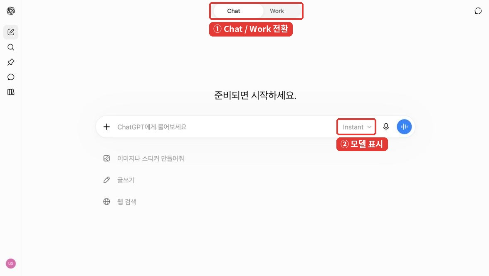
| 위치 | 이름 | 하는 일 |
|---|---|---|
| 위쪽 가운데 | [Chat] / [Work] | 오늘은 [Chat]에서 실습해요. [Work]는 긴 작업을 맡기는 별도 화면이에요. |
| 가운데 | 입력창 | 프롬프트를 붙여 넣고 Enter로 보내요. 줄을 바꿀 때는 Shift+Enter를 눌러요. |
| 입력창 왼쪽 | [+] | [사진 및 파일 추가]로 파일을 올리고, [웹 검색]을 켜요. |
| 입력창 오른쪽 | Instant | 모델과 추론 수준이 보여요. 오늘은 Instant로 맞춰요. |
| 오른쪽 위 | 임시 채팅 | 기록에 남지 않는 대화를 열어요. 아래 4-5에서 다시 봐요. |
STEP 1. 모델과 추론 수준 맞추기

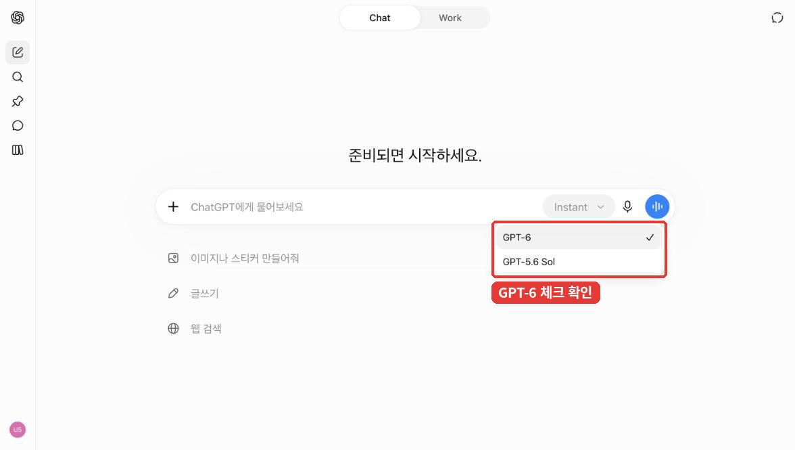
STEP 2. [+] 메뉴 둘러보기
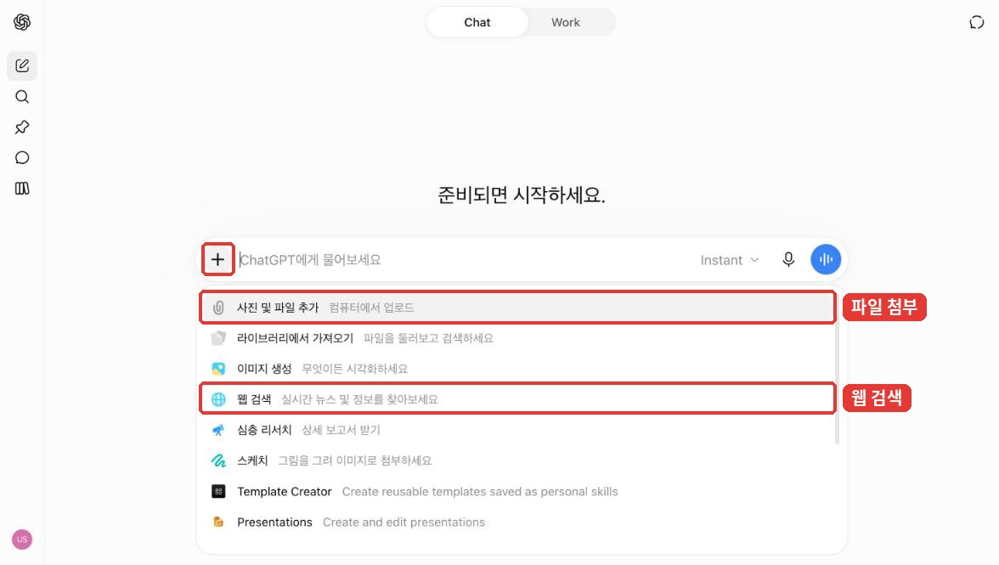
강사 시연 강사 화면을 보며 같은 순서로 따라 해요.
| 위치 | 이름 | 하는 일 |
|---|---|---|
| 가운데 | 입력창 | 프롬프트를 쓰고 보내기 버튼을 눌러 보내요. |
| 입력창 왼쪽 아래 | [+] | 파일 올리기 같은 추가 기능을 열어요. 입력창에 /를 쳐도 추가 명령 목록이 보여요. |
| 입력창 근처 | 모델 이름 | 지금 쓰는 모델 이름을 누르면 모델을 고르는 창이 열려요. 답에 들이는 노력 수준과 확장 사고(extended thinking) 사용 여부도 고를 수 있어요. |
| 설정 | 언어·화면 설정 | 화면 언어와 테마를 바꿀 수 있어요. |
STEP 1. 첫 메시지 보내기
두 AI 모두 휴대폰 앱이 있어요. 웹과 같은 계정으로 로그인하면, 컴퓨터에서 하던 대화를 이동 중에 휴대폰으로 이어서 볼 수 있어요.
| 서비스 | 앱 | 공식 안내 |
|---|---|---|
| ChatGPT | iOS·Android 앱 | 같은 계정으로 로그인한 기기끼리 대화 기록이 동기화돼요. 메뉴 아이콘(가로줄 두 개)을 눌러 사이드바를 열고 지난 대화를 골라요. |
| Claude | iOS·Android 앱 | 웹·iOS·Android 앱을 오가며 대화를 이어 갈 수 있어요. |
STEP 1. 앱 설치하고 같은 계정으로 로그인하기
개인정보는 이름, 연락처, 주민등록번호처럼 특정 사람을 알아볼 수 있는 정보예요. AI에 올리기 전에 아래를 지켜요.
AI에게 일을 시키는 요청 글을 프롬프트라고 해요. 프롬프트를 네 줄로 쓰는 법을 익히고, 같은 방법으로 웹 검색·파일 요약·출처 확인과 데이터 분석을 해 봐요.
실습 1. 한 줄만 보내기
ChatGPT에서 새 채팅을 열고 아래 한 줄만 보내요.
주간 업무 보고서 써 줘
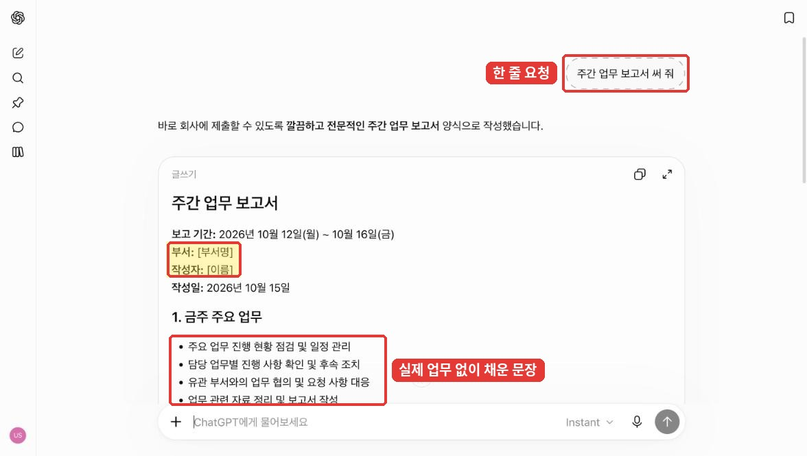
실습 2. 4요소로 보내기
새 채팅을 열고 아래 프롬프트를 보내요. [ ] 안은 그대로 두어도 되고, 내가 예전에 하던 업무로 바꿔도 돼요.
역할: 너는 공공기관 부서의 보고서 작성을 돕는 기획 담당자야. 맥락: 나는 [지역본부 운영팀] 팀장이고, 매주 월요일 [본부장]에게 주간 업무를 보고해. 이번 주 한 일은 [① 하반기 사업 예산 집행 점검 ② 민원 응대 매뉴얼 개정 초안 작성 ③ 신규 직원 2명 업무 교육]이야. 다음 주에는 [매뉴얼 개정안을 부서 회의에 상정]해. 작업: 위 내용으로 주간 업무 보고서 초안을 써 줘. 내가 준 내용에 없는 일이나 숫자는 추가하지 마. 형식: 개조식, A4 반 쪽 이내. 항목은 '추진 실적 / 다음 주 계획 / 건의 사항' 순서로, 내용이 없는 칸은 [확인 필요]로 남겨 줘.

자료를 찾고(웹 검색), 읽고(파일 요약), 확인하는(팩트체크) 세 가지를 차례로 연습해요. 4요소 프롬프트로 요청하고, 결과의 숫자는 원본과 대조해요. 실습은 ChatGPT에서 해요.
실습 ① [웹 검색]으로 최근 동향 수집
보고서나 기획서의 '배경'에 넣을 최근 동향을 모아요. 오늘 예시는 생활밀접업종(소상공인·자영업) 동향이에요. 관심 있는 분야가 있다면 [ ] 안을 바꿔서 해도 좋아요.
역할: 너는 공공기관 기획부서의 자료 조사 담당자야. 맥락: 다음 주 부서 회의에서 '[최근 생활밀접업종(소상공인·자영업) 동향]'을 짧게 보고해야 해. 작업: 최근 3개월 안에 정부·공공기관이 발표한 자료를 찾아 핵심 내용을 5줄로 요약해 줘. 출처를 찾지 못한 내용은 쓰지 마. 형식: 5줄 글머리표. 줄마다 끝에 (기관명, 발표일, 링크)를 달아 줘.

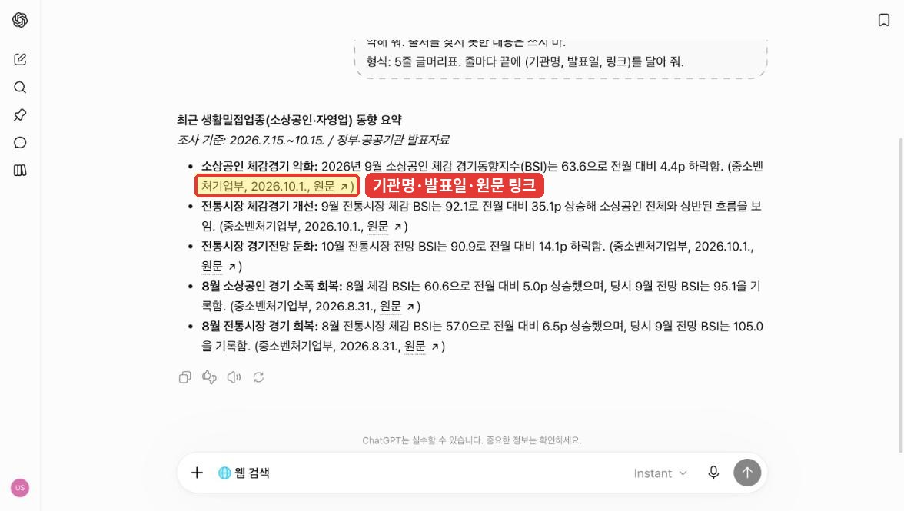
출처: 국세청_사업자현황_100대 생활업종(2026-07-31) · 재정경제부_일일경제지표, 공공데이터포털 이용허락범위 제한 없음 · 2026-10-15 확인. 실습하기 편하도록 PDF·엑셀 파일은 원본을 옮기거나 묶어 둔 가공본이에요.
실습 ② 한글(.hwp) 파일 요약
역할: 너는 부서장에게 올릴 자료를 요약하는 담당자야. 맥락: 첨부한 파일은 재정경제부의 「일일경제지표(26.10.14)」야. 오늘 아침 회의에서 경제 상황을 1분 안에 공유해야 해. 작업: 파일 내용을 핵심 3줄로 요약해 줘. 파일에 없는 숫자나 해석은 추가하지 마. 형식: 3줄 글머리표. 줄마다 근거 숫자와 파일 속 항목 이름(예: [주가] KOSPI)을 괄호로 달아 줘.
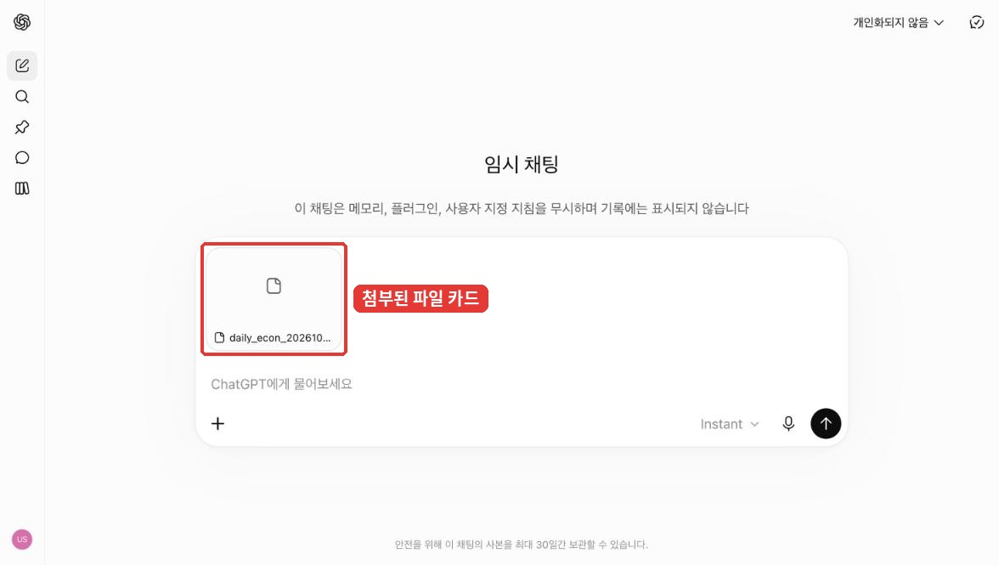

| 원본에서 확인할 숫자 | 값 | 원본 표의 날짜 열 |
|---|---|---|
| [주가] KOSPI | 6,008.81 (전일비 △0.44%) | 10/14 |
| [주가] KOSDAQ | 823.88 (전일비 △1.57%) | 10/14 |
| [환율] ￦/U$ | 1,338.30 (전일비 △0.51%, 25말비 △7.00%) | 10/14 |
| [유가 곡물 원자재] Dubai | 108.75 $/배럴 (25말비 76.57%) | 10/13 |
원본의 △는 감소(마이너스)를 뜻해요.
실습 ③ PDF 파일로 날짜까지 확인하기 — 새 채팅에서 daily_econ_20261014.pdf를 올리고 보내요.
역할: 너는 보고자료의 숫자를 확인하는 담당자야. 맥락: 첨부한 PDF는 「일일경제지표(26.10.14)」야. 표마다 날짜 열이 다를 수 있어. 작업: 핵심 3줄로 요약해 줘. 숫자마다 그 숫자가 며칠 기준인지 표의 날짜 열을 보고 함께 적어 줘. 파일에 없는 내용은 추가하지 마. 형식: 3줄 글머리표, 줄마다 (항목 이름, 기준 날짜, 숫자)
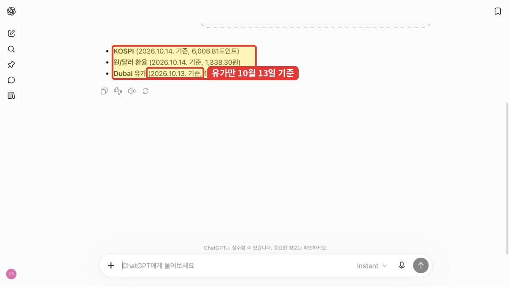
실습 ④ 엑셀(.xlsx) 파일 요약 — 새 채팅에서 biz100_202607_sido.xlsx를 올리고 보내요.
역할: 너는 부서장에게 올릴 자료를 요약하는 담당자야. 맥락: 첨부한 엑셀 파일은 국세청의 100대 생활업종 사업자 현황(2026년 7월)을 시도·업종별로 정리한 표야. 파일의 '자료 안내' 시트에 기준이 있어. 작업: 파일 내용을 핵심 3줄로 요약해 줘. 파일에 없는 숫자나 해석은 추가하지 마. 형식: 3줄 글머리표. 줄마다 근거 숫자를 달고, 마지막에 '계산에 쓴 행 수'를 한 줄로 알려 줘.
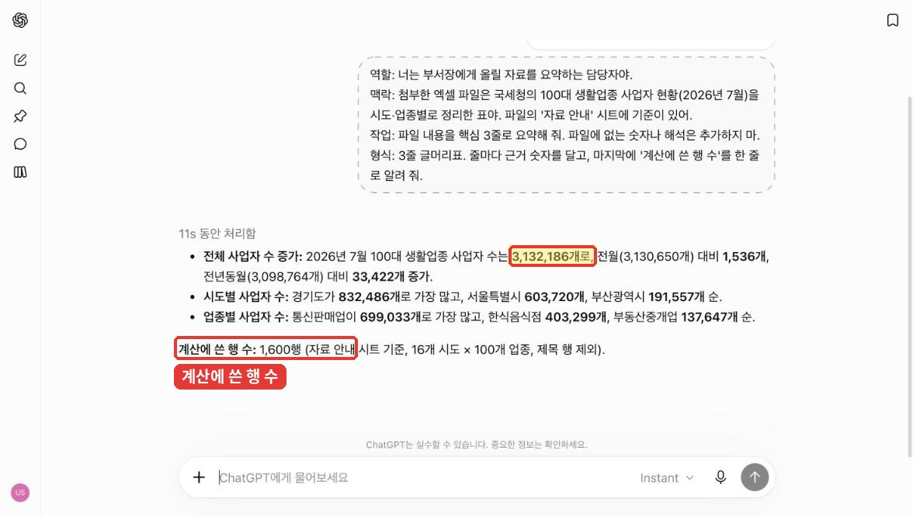
| 기준값 | 당월(2026.7) | 전월(2026.6) | 전년동월(2025.7) |
|---|---|---|---|
| 100대 생활업종 사업자 수 합계 | 3,132,186개 | 3,130,650개 (+1,536) | 3,098,764개 (+33,422) |
숫자가 다르면 "계산에 쓴 행 수와 시트 이름을 알려 줘"라고 물어보세요. '자료 안내' 시트까지 더했는지 확인할 수 있어요.
실습 ⑤ 출처 확인과 환각(Hallucination) 방지
AI가 사실이 아닌 내용을 그럴듯하게 만들어 내는 것을 환각이라고 해요. 보고서에 들어갈 숫자는 새 채팅에서 한 번 더 확인해요. 실습 ① 결과에서 숫자가 들어간 문장 하나를 골라요.
역할: 너는 보고서에 들어갈 숫자를 검증하는 담당자야. 맥락: 부서 회의 보고자료에 아래 문장을 넣으려고 해. "[실습 ① 결과에서 고른, 숫자가 들어간 문장]" 작업: 이 문장이 사실인지 기관 원문을 찾아 확인해 줘. 원문을 직접 열어 보지 못했다면 그렇다고 밝혀 줘. 형식: 판정(사실 / 일부 사실 / 확인 불가) 한 줄, 근거가 된 출처 2개 이상(기관명·발표일·링크), 원문에서 가져온 문장 1줄
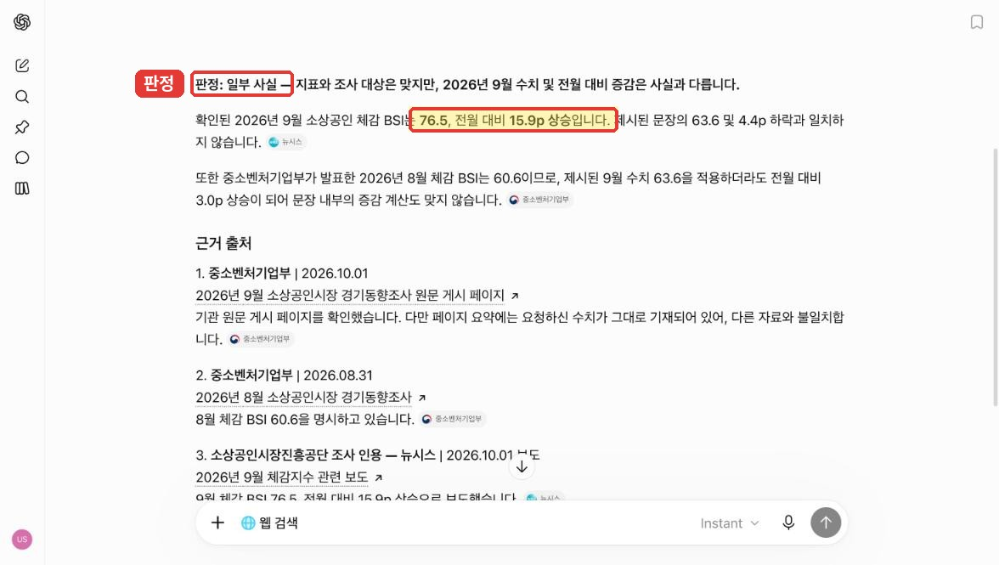
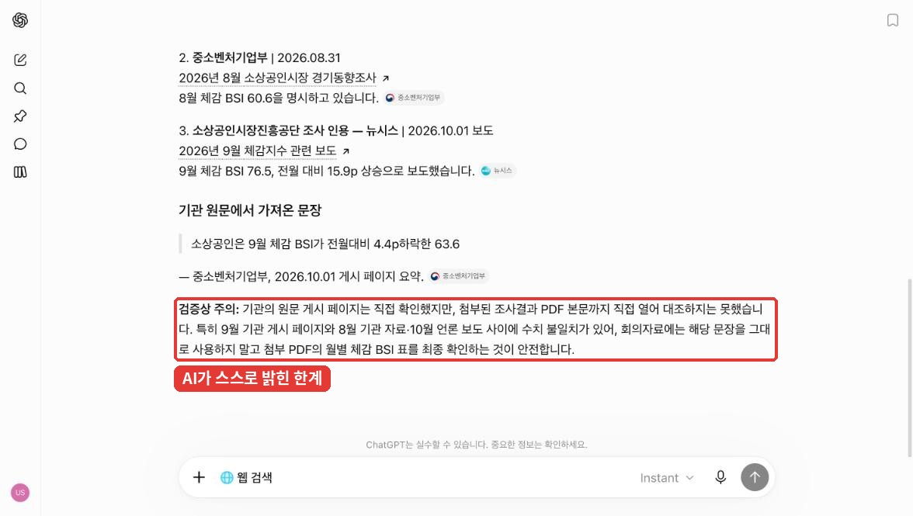
준비. 데이터 파일 올리고 시트 화면으로 보기
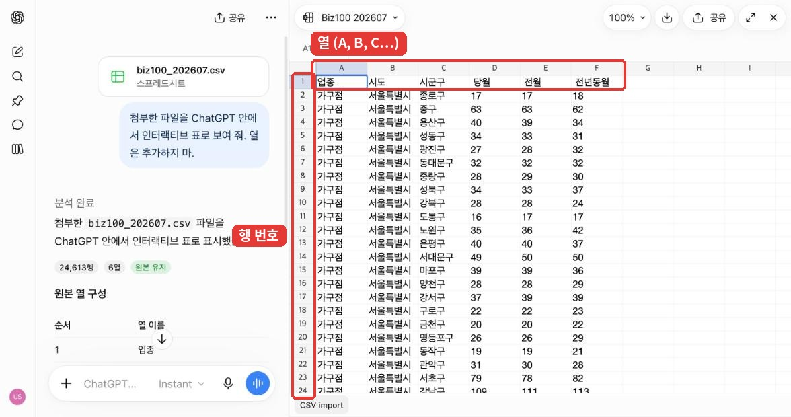
이어서 같은 대화에서 요청해요. 요청마다 결과를 아래 기준값과 대조해요.
준비. 분석 전 점검
역할: 너는 데이터 분석 담당자야. 맥락: 첨부한 biz100_202607.csv는 국세청 100대 생활업종 사업자 현황이야. 당월은 2026년 7월, 전월은 2026년 6월, 전년동월은 2025년 7월 사업자 수야. 작업: 분석 전에 데이터를 점검해 줘. 열 이름 앞뒤 공백, 빈칸, 중복 행, 음수를 확인하고, 데이터는 고치지 말고 결과만 알려 줘. 형식: 점검 항목 / 결과 표. 마지막 줄에 전체 행 수·업종 수·시도 수를 한 줄로
| 점검 항목 | 기준값 |
|---|---|
| 열 이름 앞뒤 공백 | 3개 (당월, 전월, 전년동월) |
| 빈칸 | 시군구 100건 (세종특별자치시는 시군구가 없어 빈칸) |
| 중복 행 · 음수 | 0건 · 0건 |
| 규모 | 24,613행 · 업종 100개 · 시도 16개 |
분석 1. 비교: 어느 시도에 사업자가 많은가
역할: 너는 데이터 분석 담당자야. 맥락: 위에서 점검한 데이터를 그대로 써. 작업: 시도별 당월 사업자 수와 전체 대비 비중을 구해 줘. 형식: 당월 사업자 수가 큰 순서의 표, 상위 5개 시도
| 시도 | 당월 사업자 수 | 비중 |
|---|---|---|
| 경기도 | 832,486 | 26.6% |
| 서울특별시 | 603,720 | 19.3% |
| 부산광역시 | 191,557 | 6.1% |
| 전남광주통합특별시 | 187,268 | 6.0% |
| 경상남도 | 186,050 | 5.9% |
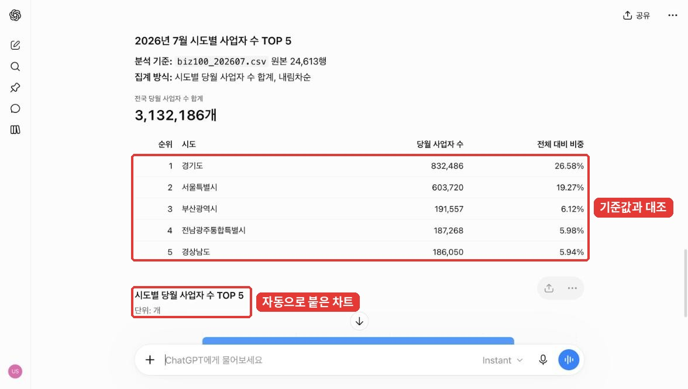
분석 2. 추세: 전월·전년 동월보다 늘었나 줄었나
역할: 너는 데이터 분석 담당자야. 맥락: 위에서 점검한 데이터를 그대로 써. 작업: 전국 합계의 전월 대비·전년 동월 대비 증감과 증감률을 구하고, 전년 동월 대비 증가 수가 큰 업종 3개와 감소 수가 큰 업종 3개를 찾아 줘. 형식: 표 2개 (전국 합계 / 업종 증가·감소 상위 3개)
| 전국 합계 | 사업자 수 | 당월과의 차이 |
|---|---|---|
| 당월 (2026.7) | 3,132,186 | - |
| 전월 (2026.6) | 3,130,650 | +1,536 (+0.05%) |
| 전년동월 (2025.7) | 3,098,764 | +33,422 (+1.08%) |
| 구분 | 업종 (전년 동월 대비) |
|---|---|
| 증가 상위 3 | 통신판매업 +33,434(+5.0%) · 실내장식가게 +4,132(+4.7%) · 펜션ㆍ게스트하우스 +3,854(+11.4%) |
| 감소 상위 3 | 한식음식점 −5,853(−1.4%) · 부동산중개업 −3,403(−2.4%) · 옷가게 −3,209(−4.0%) |
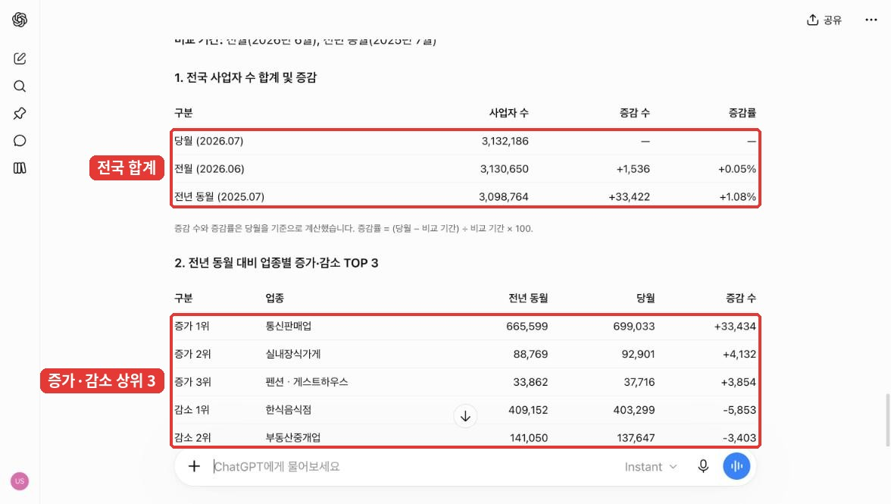
분석 3. 구성비: 어떤 업종이 대부분을 차지하나
역할: 너는 데이터 분석 담당자야. 맥락: 위에서 점검한 데이터를 그대로 써. 작업: 업종별 당월 사업자 수, 전체 대비 비중, 누적 비중을 구해 줘. 형식: 당월 사업자 수가 큰 순서의 표, 상위 5개 업종
| 업종 | 당월 사업자 수 | 비중 | 누적 비중 |
|---|---|---|---|
| 통신판매업 | 699,033 | 22.3% | 22.3% |
| 한식음식점 | 403,299 | 12.9% | 35.2% |
| 부동산중개업 | 137,647 | 4.4% | 39.6% |
| 미용실 | 118,591 | 3.8% | 43.4% |
| 커피음료점 | 93,623 | 3.0% | 46.4% |

분석 4. 교차: 시도마다 업종 구성이 다른가
역할: 너는 데이터 분석 담당자야. 맥락: 위에서 점검한 데이터를 그대로 써. 작업: 커피음료점·편의점·한식음식점 3개 업종의 당월 사업자 수를 경기도·서울특별시·부산광역시·경상남도·인천광역시별로 구해 줘. 형식: 행은 시도, 열은 업종인 교차표
| 시도 | 커피음료점 | 편의점 | 한식음식점 |
|---|---|---|---|
| 경기도 | 20,504 | 13,792 | 85,631 |
| 서울특별시 | 16,572 | 8,327 | 54,504 |
| 부산광역시 | 5,555 | 2,828 | 24,620 |
| 경상남도 | 6,336 | 3,233 | 32,833 |
| 인천광역시 | 4,562 | 2,942 | 19,685 |
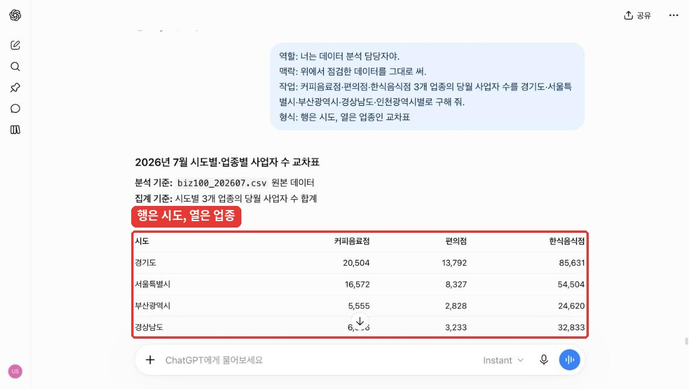
숫자가 다르면 "계산에 쓴 행 수와 열 이름을 알려 줘"라고 물어보세요. 열 이름의 공백 때문에 '당월' 열을 못 찾거나 다른 열을 더한 경우가 많아요.
과제
성장로드맵_이름_1026